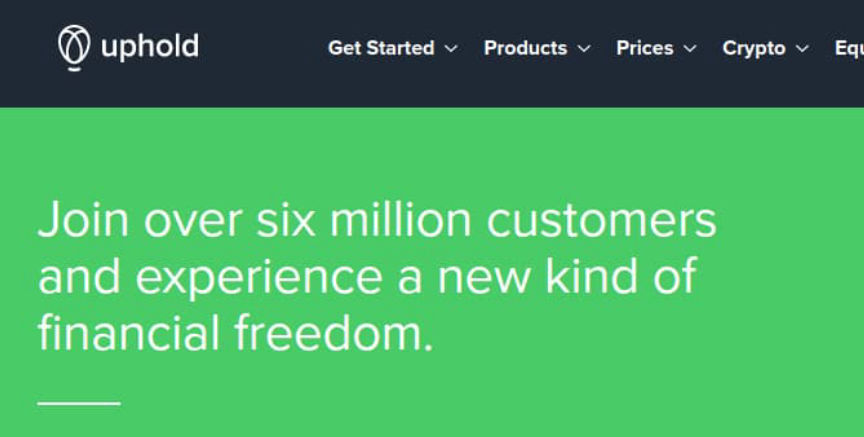
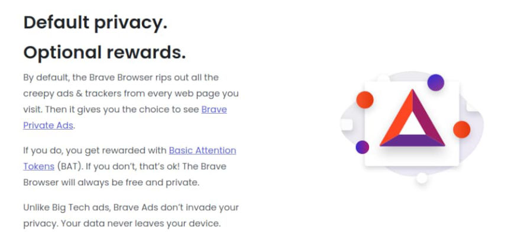
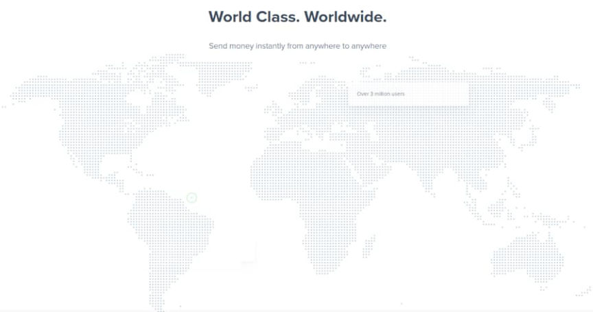
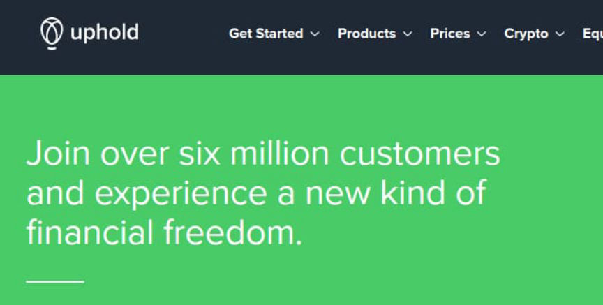
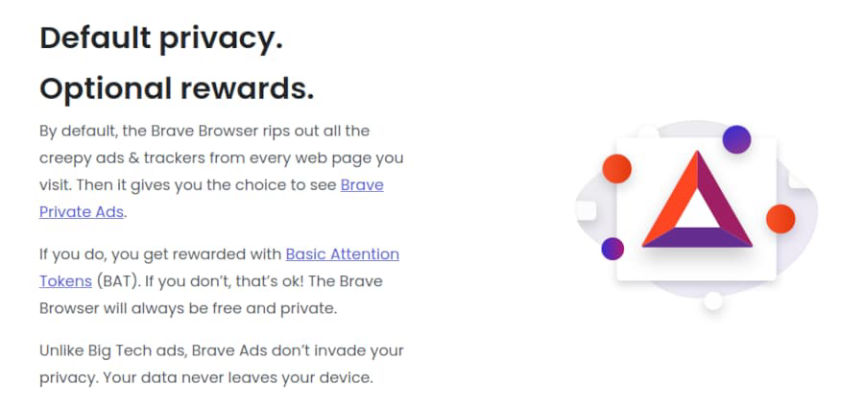
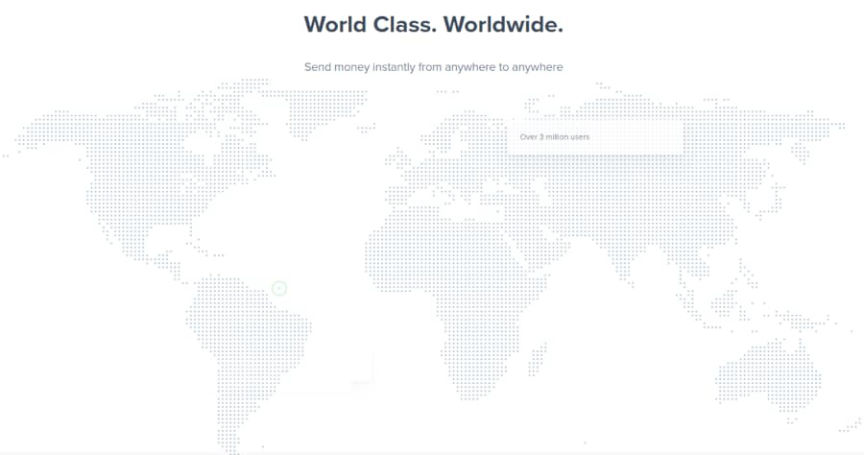

Crypto Exchange Uphold Freezes Russian Accounts
~3 min read | Published on 2022-03-06, tagged Exchange using 622 words.
Uphold, a cryptocurrency and digital asset exchange, has frozen or restricted the accounts of users living in Russia, Belarus, Ukraine, and the Balkans region.
A user on the Brave Rewards forum contacted Uphold about the status of Basic Attention Token (BAT) payouts for Brave Creators in Russia. Uphold responded, saying that Russian users will not be able to use their “Uphold account to receive Brave rewards.”
BAT is just Brave’s “utility token” based on the ERC20 token standard:
“The Basic Attention Token is the new token for the digital advertising industry. It pays publishers for their content and users for their attention while providing advertisers with more in return for their ads.”

Brave Software allows users of the Brave browser to send BAT tips to Brave Creators (primarily websites with a Brave Creator account). Brave Browser ships with a BAT wallet, but Brave Creators need to verify their identity through an exchange to collect any tips or other earnings. When Brave launched the program, users had to create and verify an account at Uphold. I believe Gemini, another exchange, is now an option for users.
Here is the complete response from Uphold:
“Thank you for contacting the Uphold support team. I hope you are doing well. My name is Monica, and I’ll be happy to help you today.
Firstly, we do hate pulling out of territories and hope to be back soon. However, for now, we are no longer providing our services in your country.
We recommend you please withdraw your funds within 72 hours. After that period, the account will be restricted to only allow restrictive withdrawals. That means that you can’t use your Uphold account to receive Brave rewards.

Again, we do hope to be back soon but can only do so if and when we’re confident that we are in compliance with all of the necessary requirements.
Best Regards,
Monica and the Uphold Team”
A member of the Brave Browser support team explained that users in the following countries could no longer receive BAT payments through Uphold:
Russia (RU) Ukraine (UA) Belarus (BY) Albania (AL) Azerbaijan (AZ) Bosnia and Herzegovina (BA) Bulgaria (BG) Croatia (HR) Kosovo (XK) Montenegro (ME) Moldova (ME) Georgia (GE) North Macedonia (MK) Romania (RO) Serbia (RS) Slovenia (SI)
Brave users with Uphold accounts in the affected regions “will no longer be able to receive Ads earnings payout deposits to your Uphold account, as transfers from [Brave] to your Uphold account will be blocked.”
“If you are in one of these regions, you will no longer be able to send tips to creators, as transfers from your Uphold account will be blocked
Note: Even if you are not in one of these regions, but you are verified with Uphold, you will no longer be able to send tips to Uphold-verified creators who are in these regions.”

Brave suggests that users unlink their Brave Rewards from Uphold and relink it to Gemini. Naturally, that might help users in some of the affected regions, but Gemini is not available in Russia, among other countries on the list.
I am interested in the future of Brave Browser and some of Brave’s other ventures. On the one hand, it seems like a simple chromium fork with a built-in toggle for blocking javascript, ads, and cookies. The browser has support for opening a new torified window with a right-click. On the other hand, it seems to be suffering from scope creep, and the company is involved in the advertising business, even if they are “good” ads.
I do not recommend anyone use Brave or any browser for that matter. Just stay offline altogether. And nobody should use it as a substitute for the Tor Browser. The bugs (or features) might surprise you: “[i]Brave Browser Leaked DNS Queries for Onion Services[/em].”
A user on the Brave Rewards forum contacted Uphold about the status of Basic Attention Token (BAT) payouts for Brave Creators in Russia. Uphold responded, saying that Russian users will not be able to use their “Uphold account to receive Brave rewards.”
BAT is just Brave’s “utility token” based on the ERC20 token standard:
“The Basic Attention Token is the new token for the digital advertising industry. It pays publishers for their content and users for their attention while providing advertisers with more in return for their ads.”

True freedom is having your money seized.
Brave Software allows users of the Brave browser to send BAT tips to Brave Creators (primarily websites with a Brave Creator account). Brave Browser ships with a BAT wallet, but Brave Creators need to verify their identity through an exchange to collect any tips or other earnings. When Brave launched the program, users had to create and verify an account at Uphold. I believe Gemini, another exchange, is now an option for users.
Here is the complete response from Uphold:
“Thank you for contacting the Uphold support team. I hope you are doing well. My name is Monica, and I’ll be happy to help you today.
Firstly, we do hate pulling out of territories and hope to be back soon. However, for now, we are no longer providing our services in your country.
We recommend you please withdraw your funds within 72 hours. After that period, the account will be restricted to only allow restrictive withdrawals. That means that you can’t use your Uphold account to receive Brave rewards.

Ads are good as long as there is a new token involved.
Again, we do hope to be back soon but can only do so if and when we’re confident that we are in compliance with all of the necessary requirements.
Best Regards,
Monica and the Uphold Team”
A member of the Brave Browser support team explained that users in the following countries could no longer receive BAT payments through Uphold:
Brave users with Uphold accounts in the affected regions “will no longer be able to receive Ads earnings payout deposits to your Uphold account, as transfers from [Brave] to your Uphold account will be blocked.”
“If you are in one of these regions, you will no longer be able to send tips to creators, as transfers from your Uphold account will be blocked
Note: Even if you are not in one of these regions, but you are verified with Uphold, you will no longer be able to send tips to Uphold-verified creators who are in these regions.”

The vast majority of these companies are just grifters.
Brave suggests that users unlink their Brave Rewards from Uphold and relink it to Gemini. Naturally, that might help users in some of the affected regions, but Gemini is not available in Russia, among other countries on the list.
I am interested in the future of Brave Browser and some of Brave’s other ventures. On the one hand, it seems like a simple chromium fork with a built-in toggle for blocking javascript, ads, and cookies. The browser has support for opening a new torified window with a right-click. On the other hand, it seems to be suffering from scope creep, and the company is involved in the advertising business, even if they are “good” ads.
I do not recommend anyone use Brave or any browser for that matter. Just stay offline altogether. And nobody should use it as a substitute for the Tor Browser. The bugs (or features) might surprise you: “[i]Brave Browser Leaked DNS Queries for Onion Services[/em].”